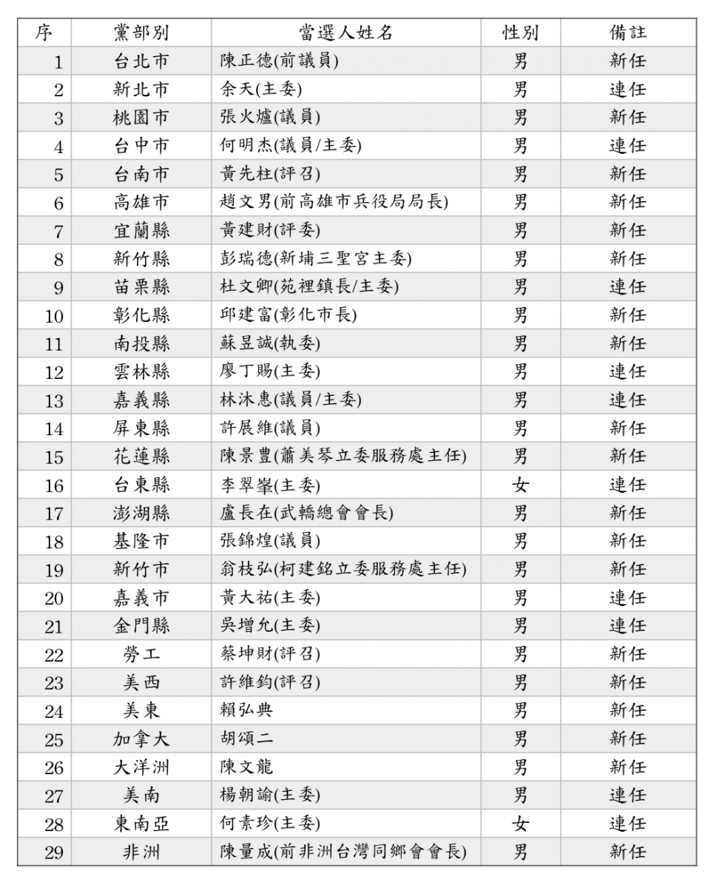
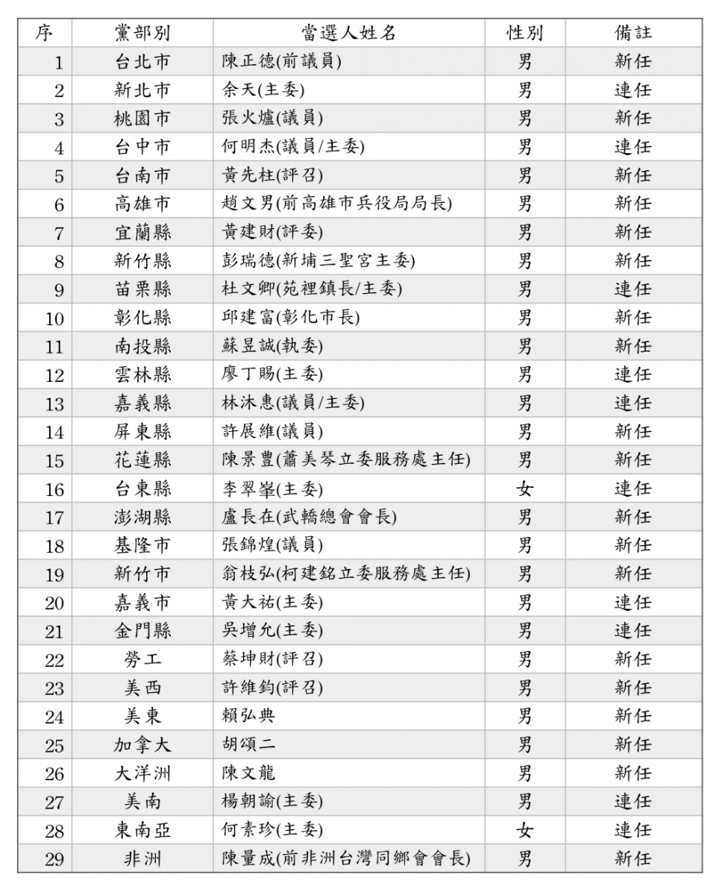

2018-05-27
2018年各縣市、勞工暨海外黨部主任委員當選名單
民主進步黨今（27）日舉行各二級黨部主委、全國黨代表及各縣市黨代表選舉投開票作業，選舉投開票過程平和順利，共選出29席二級黨部主任委員、334席全國黨代表。相關選舉結果將經5月30日中執會確認並通過後公告。
【附件、2018年各縣市、勞工暨海外黨部主任委員當選名單】

2018-05-27
民主進步黨今（27）日舉行各二級黨部主委、全國黨代表及各縣市黨代表選舉投開票作業，選舉投開票過程平和順利，共選出29席二級黨部主任委員、334席全國黨代表。相關選舉結果將經5月30日中執會確認並通過後公告。
【附件、2018年各縣市、勞工暨海外黨部主任委員當選名單】
